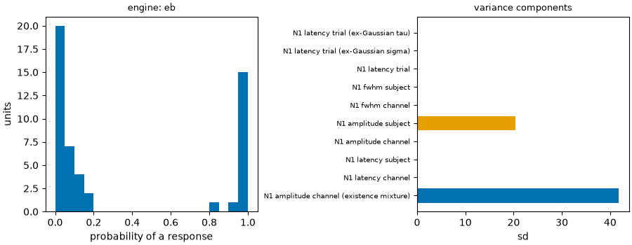

Note
Go to the end to download the full example code.
18: Across subjects¶
Combine trials, channels and subjects in one model, with partial pooling and uncertainty.
Introduction¶
A study has three nested levels: trials inside a channel, channels inside a subject, subjects inside the group. Averaging each level in turn throws away information: a subject with two trials is trusted as much as one with two hundred, and a noisy channel counts the same as a clean one.
evoparam.hierarchical fits the three levels at once. It uses partial pooling: a
noisy or sparse unit is pulled toward the group mean (shrinkage), a well-measured one
is left alone. The default engine is empirical Bayes (fast, in the core); a full
Bayesian engine (numpyro or pymc) is an optional extra for when you want full
posteriors. The result is a group estimate with honest uncertainty, and it can use a
covariate such as age.
# Import what we need
import warnings
from evoparam import plots
from evoparam.hierarchical import fit_hierarchical, posterior_summary
from evoparam.sim import simulate_ccep
The data¶
Ten subjects, five electrodes each, 20 trials. About 60 % of the electrodes answer. In
a real study each subject would be one recording read with read_bids; here each is a
simulated TrialSet, and we pass the list straight to fit_hierarchical.
subjects = []
for subject in range(10):
trials, _ = simulate_ccep(
20, n_channels=5, p_response=0.6, p_n2=1.0, artifact=False, layout="grid",
sfreq=512.0, seed=subject, n1={"amplitude": -45.0 - 7.0 * subject},
) # fmt: skip
subjects.append(trials)
print(f"{len(subjects)} subjects, {subjects[0].n_channels} channels each")
10 subjects, 5 channels each
The fit¶
fit_hierarchical fits the N1 at every level. components=["N1"] keeps the model
small for the tutorial. engine="eb" is empirical Bayes, the default.
with warnings.catch_warnings():
warnings.simplefilter("ignore")
hier = fit_hierarchical(subjects, components=["N1"], engine="eb", random_state=0)
print(hier.methods_text())
Evoked responses were analysed with evoparam (version 0.1.0.dev0). Parameters were pooled across levels (trial > channel > subject) with a hierarchical model fitted by empirical Bayes (restricted maximum likelihood variance components). Random draws used the seed 0; the result can be regenerated from its recorded provenance with evoparam.reproduce. Software: Bellec Y.V. evoparam: parameterizing evoked neural responses (version 0.1.0). https://github.com/yannbellec/evoparam
The group estimate¶
posterior_summary reads any level. At the group level it gives one estimate per
parameter, with a standard error and how many channels and subjects it rests on. This is
the number a paper reports: the group N1 latency and amplitude, pooled correctly over
the levels.
group_summary = posterior_summary(hier, level="group")
print(group_summary.round(3).to_string(index=False))
component parameter estimate se n_channels n_subjects
N1 latency 0.028 0.002 19 10
N1 amplitude -77.556 6.563 19 10
N1 fwhm 0.009 0.001 19 10
At the subject level it gives one row per subject. pi is the share of that
subject’s channels with an N1; the latency and amplitude are the subject means, each
pulled toward the group by an amount set by how well that subject is measured.
subject_summary = posterior_summary(hier, level="subject")
columns = ["subject", "n_channels_with_component", "pi", "latency", "latency_se", "amplitude"]
print(subject_summary[columns].round(3).head().to_string(index=False))
subject n_channels_with_component pi latency latency_se amplitude
sub-1 1 0.223 0.028 0.002 -52.054
sub-2 3 0.439 0.028 0.002 -53.733
sub-3 1 0.249 0.028 0.002 -62.092
sub-4 1 0.211 0.028 0.002 -64.852
sub-5 2 0.000 0.028 0.002 -75.224
Where the variance sits¶
variance_components splits the spread of the N1 into between-subject,
between-channel and between-trial parts. It answers “would more subjects or more trials
help most?”: if most variance is between subjects, add subjects; if between trials, add
trials. The figure shows the group estimate and the subject spread.
print(hier.variance_components.round(4).to_string(index=False))
fig = plots.plot_hierarchical(hier)

component parameter level sd method
N1 amplitude channel (existence mixture) 41.8276 EM, two-component mixture
N1 latency channel 0.0077 REML
N1 latency subject 0.0000 REML
N1 amplitude channel 0.0000 REML
N1 amplitude subject 20.4362 REML
N1 fwhm channel 0.0032 REML
N1 fwhm subject 0.0000 REML
N1 latency trial 0.0002 REML (residual beyond noise)
N1 latency trial (ex-Gaussian sigma) 0.0000 moments
N1 latency trial (ex-Gaussian tau) 0.0002 moments
Note
A covariate goes in through a formula. fit_hierarchical(subjects,
components=["N1"], formula="latency ~ age") regresses the N1 latency on each
subject’s age (read from the metadata) while keeping the pooling. For full posteriors
and credible intervals, engine="numpyro" or engine="pymc" (optional extras)
fit the same model with MCMC; compare_hierarchical then contrasts several fits.
Conclusion¶
The hierarchical model is how you go from one recording to a group result. It pools trials, channels and subjects in one step, trusts each unit by how well it is measured, and returns a group estimate with uncertainty plus a variance breakdown that guides the next study’s design. Empirical Bayes is the fast default; the Bayesian engines are there when you need the whole posterior.
Total running time of the script: (0 minutes 4.243 seconds)